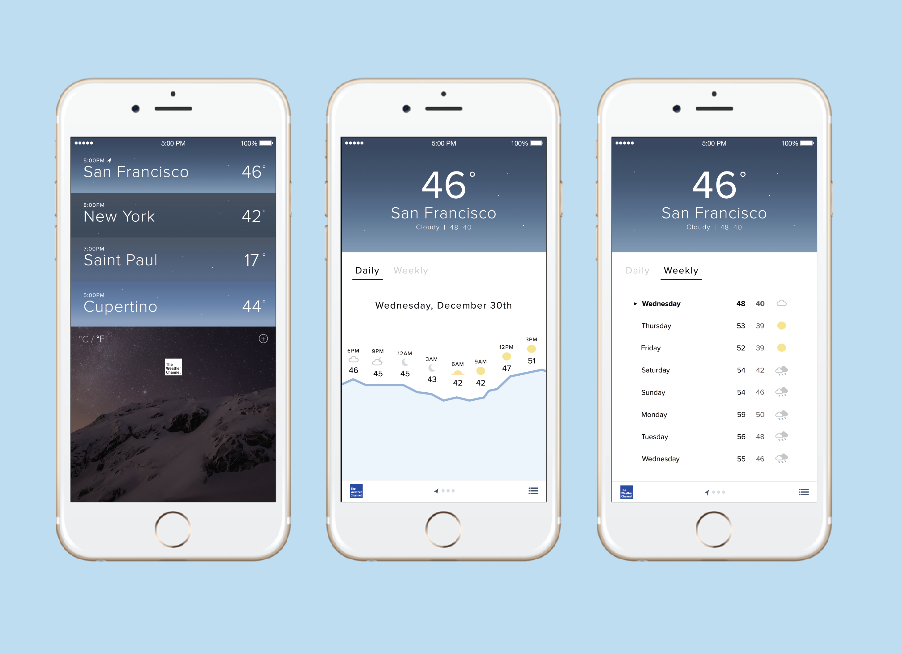
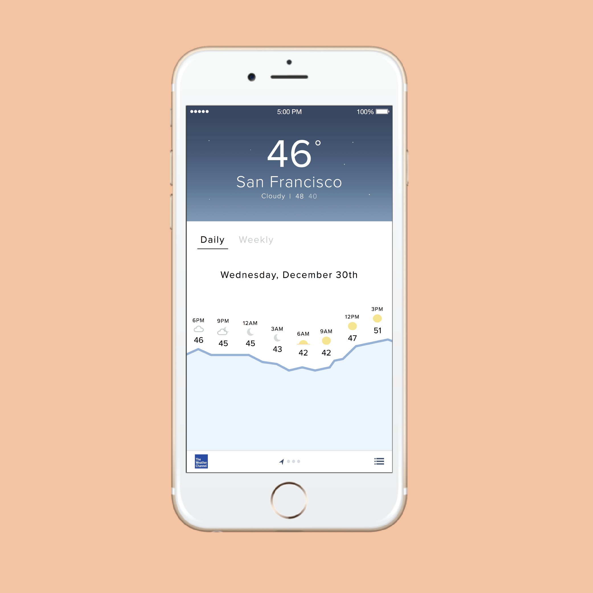
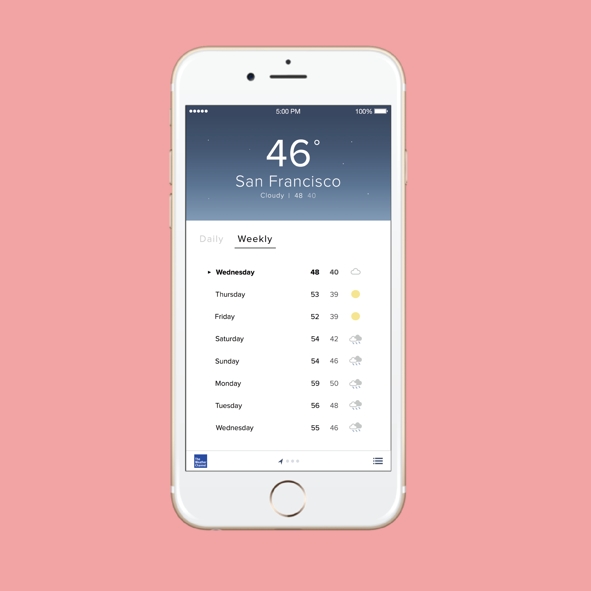
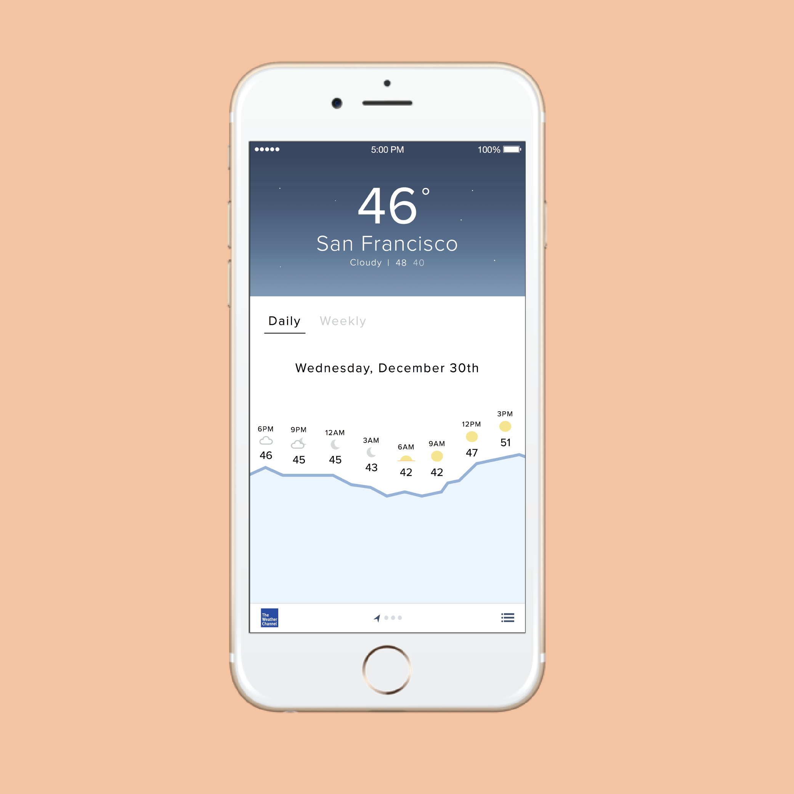
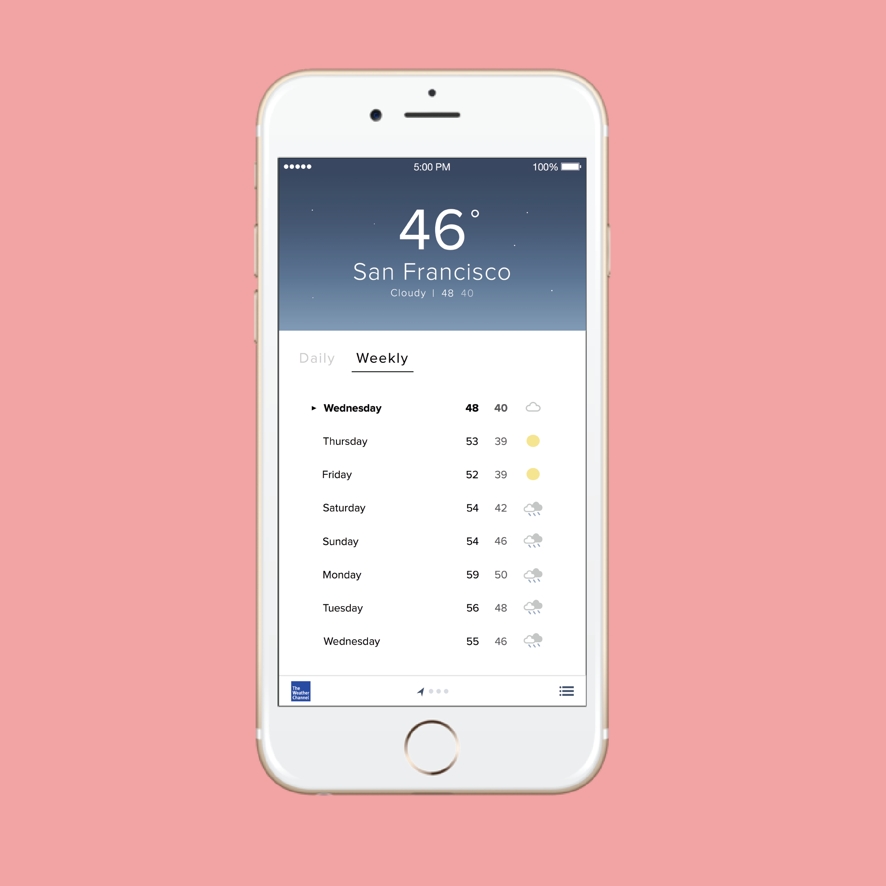
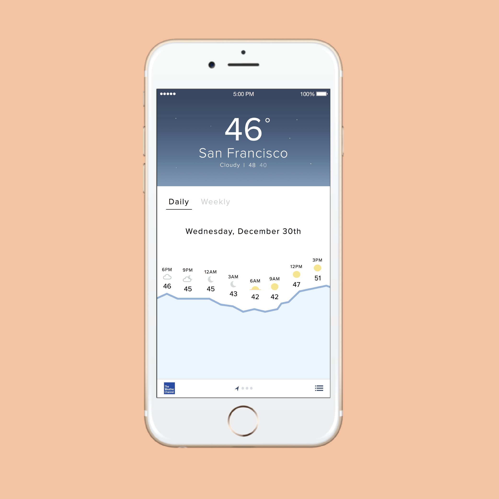
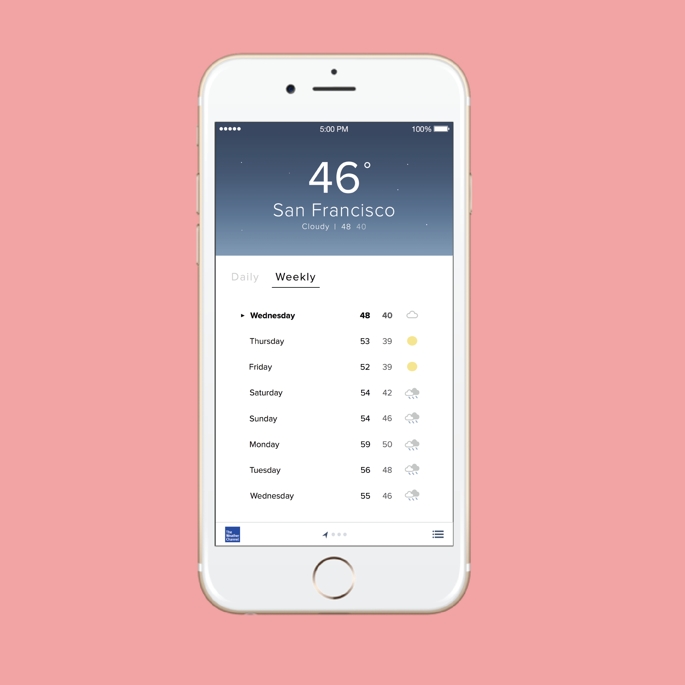

Weather App Redesign
Recently, I decided to redesign the default iOS weather application. I felt there was a better way to accomodate for users who checked the weather to figure out how to prepare for their day. In total, I added one additional interaction (by dividing up the daily and weekly information) and one major feature (by graphically visualizing weather changes throughout the course of 24 hours).
The Problem
Life gets busy. Really busy. Sometimes so busy that you're out of the house by 8AM and home no earlier than 11PM. On those occasions, it's important that you prepare for your day ahead by getting a good night's rest, staying hydrated, and not skipping any meals. Oh, and make sure you dress appropriately for the weather! On that note, I realize the current iOS weather app doesn't really do a good job helping you figure out how you need to dress for those days that get really busy.
Read About the Process

 




